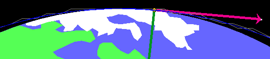
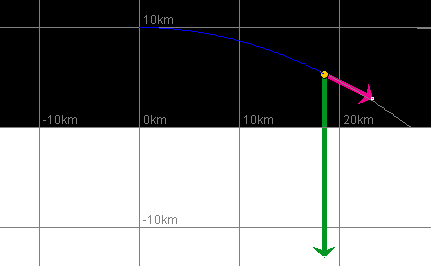
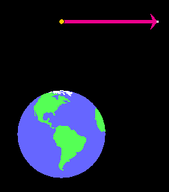
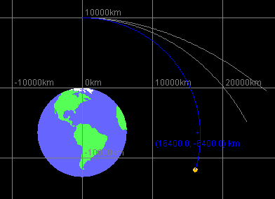

Instructions
This page is designed to get you started using the applet. The applet should be open. The step-by-step instructions on this page are to be done in the applet. You may need to toggle back and forth between instructions and applet if your screen space is limited.
Exercise 1. Prepare the applet for observing the satellite's motion.
 the applet.
the applet.
The magenta velocity vector should be visible. The tail
end of this vector is at the satellite. You can hide or
display the velocity vector by deselecting or selecting
this vector from the Vector panel. To open the Vector
panel, select the Vectors button  .
.
For the time being, keep the velocity vector displayed and also display the gravitational force acting on the satellite by selecting the vector from the Vector panel. The magnitude of this force is the satellite's weight W.
Enter the values x = 0 and y = 10 km in the position data entry fields, and press ENTER. The satellite will be moved to a point just above the north pole (top) of the earth. Drag the Data box out of the way if necessary to see the satellite.
Scale Setting. After Reset, the distance scale is set at 100 pix = 1,000 km. Change the scale setting to 100 pix = 10,000 km by clicking the second radio button to the right of the present one. All distances will now be shown ten times smaller and the velocity vector arrow somewhat smaller as well. In general, the length of the arrow representing the velocity (but not the actual velocity value) is adjusted as the distance scale is changed, but by a smaller factor than the distances or for some scale changes not at all. It is not important to know by what factor the length of the arrow representing the velocity is adjusted.
 to show
the satellite's path when the satellite is in motion.
to show
the satellite's path when the satellite is in motion.
Exercise 2. Click PLAY  , and observe the following aspects of
the satellite's motion:
, and observe the following aspects of
the satellite's motion:
Pause  the motion after the satellite has completed a bit more than
one revolution. The orbit should look like that in the
snapshot in Figure 1 below.
the motion after the satellite has completed a bit more than
one revolution. The orbit should look like that in the
snapshot in Figure 1 below.

Figure 1
The satellite's path is somewhat elliptical.
Replay the motion several times, if necessary, and answer the following questions.
Question 1. At any moment during the motion, in which direction does the velocity vector point?
Question 2. How does the magnitude of the velocity, the speed, vary during the motion? Where is it largest, where is it smallest?
Question 3. At any moment during the motion, in which direction do the satellite's acceleration and the force of gravity acting on the satellite point?
Question 4. How does the magnitude of the force of gravity (the satellite's weight) vary during the motion? How does it vary with the satellite's distance from the center of the earth? Is it ever zero?

In this section, you will observe the motion at different settings of the distance scale.
Exercise 1. Click REWIND  .
.
The satellite will be reset to its starting position. Notice that the old trace from Figure 1 is now shown in grey.
Make no changes in any of the previous settings, except in the scale. Change it from 100 pix = 10,000 km to 100 pix = 1,000 km by clicking the radio button two positions to the left of the presently selected radio button. This will be the third radio button from the left. Notice that the trace now appears jagged. This is the grey trace in Figure 2 below. The reason is that the trace, like all other distances, is magnified in this scale setting relative to the earlier one.
In simulating the satellite's motion, the computer has to calculate in discrete time steps. The satellite's path is drawn as a straight line during each such time step. At the first scale setting, these straight lines were too short to be seen and the trace appeared to be smooth. However, they show up when one magnifies them, as in the present scale setting.
Exercise 2. Keeping the scale at 100 pix = 1,000 km, click PLAY and wait until the satellite has completed one revolution. You should be able to observe two things.
(a) The new trace (in blue) is much smoother than the old one. See Figure 2 below.

Figure 2
(b) It takes much longer, in terms of the time shown by your
wrist watch, for the satellite to complete one revolution in
the "100 pix = 1,000 km" scale setting than in the "100 pix =
10,000 km" setting. (Of course, the time per revolution of a
real satellite is independent of the scale setting. This
"real" time is the time shown in the Data box that you can
display by selecting the Data button  .)
.)
The fact that explains both observations is that the applet uses smaller time steps in simulating a motion when one zooms in and the distances represented by 100 pixels get shorter. The applet is designed so that, roughly speaking, the number of time steps used for a motion to go through 100 pixels is the same at every scale setting. That way, motions will always look smooth and motions that go way beyond the window size at a given scale setting will require much more time to execute than motions whose range lies within the window.
Exercise 3. Click REWIND. Don't change any of the settings, except for the scale. Set that to the most zoomed-in setting "100 pix = 10 km", but don't change any of the other settings. The previous traces will all appear as a single straight grey line 10 km above the surface of the earth. There are no jagged edges in the traces because during one time step at the previous scale setting the satellite traveled a distance greater than that represented by the applet window in the present scale setting.
PLAY the motion, and observe the values of x and y. It will take a long time on your wrist watch until the satellite completes its revolution. You may not want to wait that long. You can estimate this time from observing how the x and y values are progressing.
Exercise 4. Click REWIND, and change the initial speed to a value more appropriate to the "100 pix = 10 km" distance scale, e.g., v = 600 m/s. Keep the initial direction angle equal to 0. Make no other changes.
PLAY the motion. If you choose the initial velocity value
suggested and display the grid by clicking the Grid button
 , to be
able to visualize the distances better, you should get the
trajectory shown in blue in Figure 3 below.
, to be
able to visualize the distances better, you should get the
trajectory shown in blue in Figure 3 below.

Figure 3
The shape of a satellite's orbit or a projectile's trajectory depends on the initial conditions, i.e., the initial position and velocity. Try to find initial conditions that will produce a circular orbit at a height of 10,000 km above the surface of the earth.
Exercise 1. RESET the applet. Set the scale to 100 pix = 10,000 km, and set the initial position to
 x = 0,
x = 0,  y = 10,000 km
y = 10,000 km
by entering these values in the x and y data entry fields and pressing ENTER. Don't forget to press ENTER. Otherwise, the applet will not know about these values. This initial position is shown in Figure 4 below.
Exercise 2. Set the initial velocity angle θ to 0, and press ENTER. This way the orbit will at least start out in the right direction, i.e., perpendicular to the radius.
If the velocity vector is selected, the magenta arrow should now be pointing horizontal and to the right, as in Figure 4 below.

Figure 4
Exercise 3. Now use trial and error to find the initial speed that will yield a circular orbit (or, at least, an approximately circular orbit). Set an initial value of the speed v, and PLAY the simulation with the trace displayed. If the resulting path is not circular, click REWIND, change the initial value of v, and try again. Continue in this manner until you have an orbit that looks very nearly circular. See Figure 5 below for a succession of orbits obtained in this manner.
Helpful suggestion. To make it easier to judge how close you are to a circular orbit, mark a second point in the applet window through which a circular trajectory would have to pass. E.g., mark the point on the circle that is directly to the right of the center of the earth. This point is at
 x = 6,378 + 10,000 = 16,378 km,
x = 6,378 + 10,000 = 16,378 km,
 y = -6,378 km.
y = -6,378 km.
To mark the point, select the Point Coordinates button
 , click in the applet window, and drag the
mouse while the mouse button is depressed. The coordinates
at the center of the crosshairs will be displayed. Adjust
them to the pair of values you want, and release the mouse
button.
, click in the applet window, and drag the
mouse while the mouse button is depressed. The coordinates
at the center of the crosshairs will be displayed. Adjust
them to the pair of values you want, and release the mouse
button.
The adjustment is made easier if you adjust one of the two coordinates first, say, the x-coordinate. When that coordinate is equal to the value you want, release the mouse button, press the Shift-key and keep it down while pressing the mouse button again and dragging the mouse up or down. The x-coordinate will be held fixed while you adjust the y-coordinate.
Note that the applet will not let you make position adjustments to more than three significant figures. At best, it will let you set your point at
 x = 16,400 km,
x = 16,400 km,  y = -6,400 km.
y = -6,400 km.
See Figure 5 below.

Figure 5
Figure 5 shows three orbits, with initial speeds equal to 7,000 km/s, 6,000 km/s, and 5,000 km/s going from outward to inward. The 5,000-km/s orbit misses the point by very little and is very nearly circular.